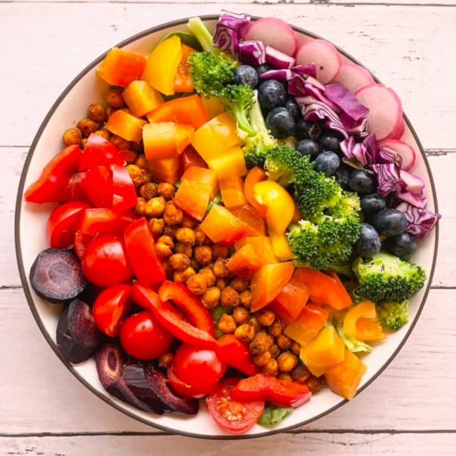

Rainbow Diet Nutritional Mapping for Garden Vegetables
Eat the Rainbow with Robb Garden Vegetables

Explore nutritional information across various colorful vegetables
Purple – 1 cup: Healthy heart, Healthy blood vessels, Helps memory, Anti-aging, Healthy urinary system
Eggplant
Purple
- Vitamin A: 2%
- B1: 3167%
- B6: 58824%
- B9: 19%
- B12: N/A
- C: 111%
- Iron: 644%
- Magnesium: 98%
- Potassium: 223%
- Selenium: 618%
- Zinc: 1245%
- Omega 3 Fas: 7300%
- D: 40%
Radish / Daikon
Purple
- Vitamin A: 1%
- B1: 1333%
- B6: 556706%
- B9: 625%
- B12: N/A
- C: 8262%
- Iron: 30044%
- Magnesium: 18268%
- Potassium: 496%
- Selenium: 431%
- Zinc: 464%
- Omega 3 Fas: 1500%
- D: 675%
Turnip
Purple
- Vitamin A: 1%
- B1: 2167%
- B6: 999529%
- B9: 350%
- B12: N/A
- C: 4384%
- Iron: 17600%
- Magnesium: 6960%
- Potassium: 406%
- Selenium: 236%
- Zinc: 182%
- Omega 3 Fas: 300%
- D: 575%
Green – 1 cup: Prevents cancer, Healthy bowels, Immune system support, Supports eyesight, Healthy skin
Yellow – 5 items: Healthy heart, Lowers cholesterol, Healthy joints, Supports eyesight, Healthy skin
Citrus
Yellow
- Vitamin A: 122%
- B1: 917%
- B6: 471%
- B9: 750%
- B12: N/A
- C: 5889%
- Iron: 56%
- Magnesium: 238%
- Potassium: 385%
- Selenium: 0%
- Zinc: 64%
- Omega 3 Fas: 100%
- D: 0%
Corn
Yellow
- Vitamin A: 578%
- B1: 1667%
- B6: 353%
- B9: 1050%
- B12: N/A
- C: 756%
- Iron: 289%
- Magnesium: 881%
- Potassium: 574%
- Selenium: 109%
- Zinc: 418%
- Omega 3 Fas: 500%
- D: 0%
Lemon
Yellow
- Vitamin A: 17%
- B1: 83%
- B6: 0%
- B9: 19%
- B12: N/A
- C: 412%
- Iron: 311%
- Magnesium: 230%
- Potassium: 294%
- Selenium: 5%
- Zinc: 9%
- Omega 3 Fas: 100%
- D: 20%
Lemondrop Watermelon
Yellow
- Vitamin A: 6322%
- B1: 250%
- B6: 294%
- B9: 75%
- B12: N/A
- C: 900%
- Iron: 133%
- Magnesium: 238%
- Potassium: 238%
- Selenium: 73%
- Zinc: 91%
- Omega 3 Fas: 400%
- D: 0%
Lemongrass
Yellow
- Vitamin A: 0%
- B1: 83%
- B6: 471%
- B9: 0%
- B12: N/A
- C: 289%
- Iron: 1000%
- Magnesium: 1429%
- Potassium: 1538%
- Selenium: 36%
- Zinc: 455%
- Omega 3 Fas: 100%
- D: 0%
Melon
Yellow
- Vitamin A: 25929%
- B1: 250%
- B6: 294%
- B9: 362%
- B12: N/A
- C: 2813%
- Iron: 4600%
- Magnesium: 4386%
- Potassium: 568%
- Selenium: 51%
- Zinc: 109%
- Omega 3 Fas: 600%
- D: 70%
Rutabaga
Yellow
- Vitamin A: 86%
- B1: 2917%
- B6: 2294%
- B9: 2027%
- B12: N/A
- C: 10722%
- Iron: 49322%
- Magnesium: 30972%
- Potassium: 717%
- Selenium: 491%
- Zinc: 1191%
- Omega 3 Fas: 3400%
- D: 1005%
Orange – 5 items: Healthy heart, Immune system support, Skin protection, Healthy skin, Antioxidant
Red – 1 cup: Healthy heart, Decreases blood pressure, Skin protection, Prevents cancer, Helps cell renewal
Brown 1 Items
Beans (dry: all types)
Brown
- Vitamin A: 3%
- B1: 3500%
- B6: 2176%
- B9: 4520%
- B12: N/A
- C: 200%
- Iron: 2767%
- Magnesium: 3333%
- Potassium: 2668%
- Selenium: 455%
- Zinc: 2536%
- Omega 3 Fas: 2800%
- D: 0%
White – 5 items: Immune system, Healthy colon, Healthy heart, Prevents ulcers, Lowers cholesterol
Cauliflower
White
- Vitamin A: 3%
- B1: 417%
- B6: 1235%
- B9: 1425%
- B12: N/A
- C: 5356%
- Iron: 233%
- Magnesium: 357%
- Potassium: 645%
- Selenium: 109%
- Zinc: 245%
- Omega 3 Fas: 300%
- D: 0%
Garlic
White
- Vitamin A: 0%
- B1: 83%
- B6: 647%
- B9: 7%
- B12: N/A
- C: 0%
- Iron: 2161%
- Magnesium: 1%
- Potassium: 853%
- Selenium: 227%
- Zinc: 32809%
- Omega 3 Fas: 7000%
- D: 1405%
Jerusalem Artichokes
White
- Vitamin A: 0%
- B1: 1667%
- B6: 1235%
- B9: 337%
- B12: N/A
- C: 0%
- Iron: 6222%
- Magnesium: 90%
- Potassium: 1370%
- Selenium: 4444%
- Zinc: 191%
- Omega 3 Fas: 7000%
- D: 3480%
Onions - large
White
- Vitamin A: 0%
- B1: 0%
- B6: 59%
- B9: 48%
- B12: N/A
- C: 0%
- Iron: 889%
- Magnesium: 0%
- Potassium: 311%
- Selenium: 20745%
- Zinc: 45%
- Omega 3 Fas: 200%
- D: 320%
Potatoes
White
- Vitamin A: 0%
- B1: 1000%
- B6: 2000%
- B9: 281%
- B12: N/A
- C: 0%
- Iron: 6722%
- Magnesium: 9%
- Potassium: 896%
- Selenium: 46182%
- Zinc: 90909%
- Omega 3 Fas: 3400%
- D: 4625%